Студент: Санджар Ниязов
Email: niazovsanzar08@gmail.com
Дата: 4 марта 2026 г.
Изучить идеологию и применение средств контроля версий. Освоить умения по работе с git.
…
Были проверены и настроены основные параметры Git:
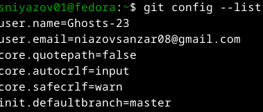
Создан PGP-ключ для подписи коммитов:
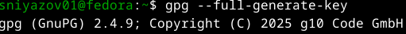
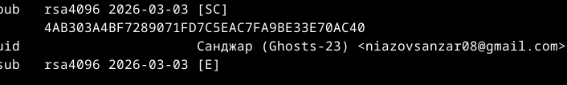
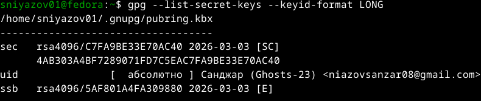
Публичный ключ был экспортирован и добавлен в настройках GitHub:
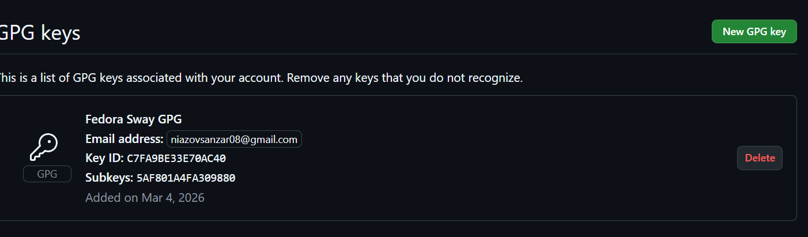
Настроена автоматическая подпись всех коммитов:
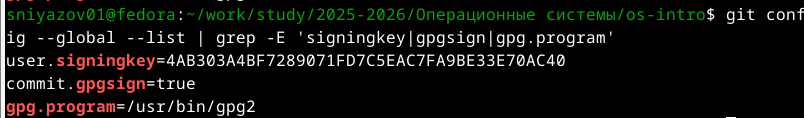
Был создан тестовый файл и выполнен подписанный коммит:
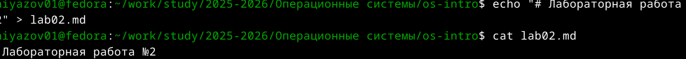
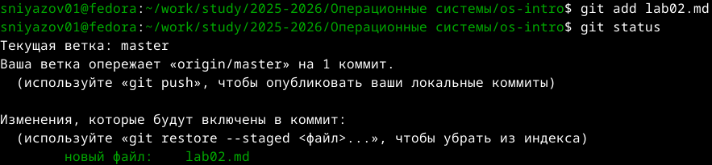
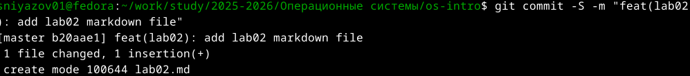
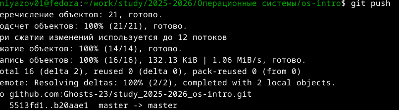
На GitHub коммиты отображаются с пометкой Verified:
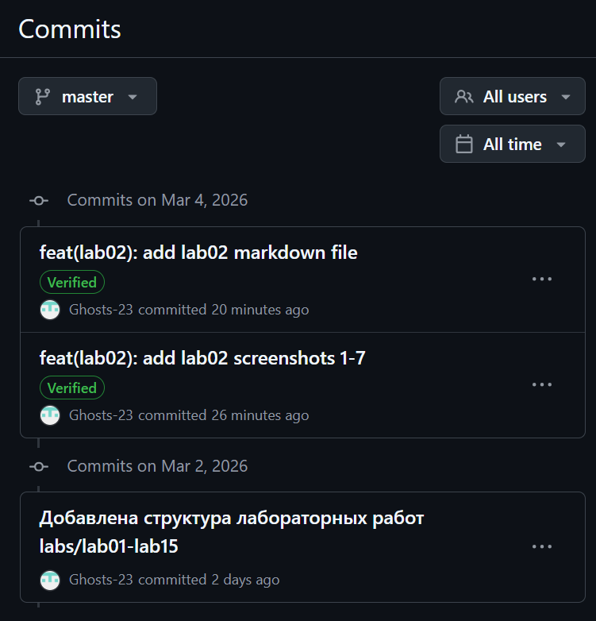
Выполнена авторизация в GitHub CLI:
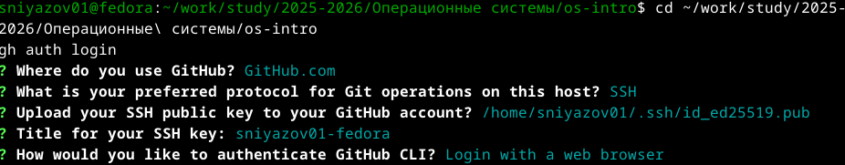
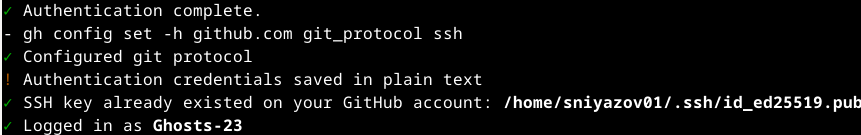
В ходе лабораторной работы были изучены средства контроля версий Git, создан PGP-ключ для подписи коммитов, настроена автоматическая подпись, выполнена интеграция с GitHub и GitHub CLI. Все коммиты успешно верифицируются на GitHub.
Системы контроля версий (VCS) — это программные инструменты, которые помогают отслеживать изменения в файлах, координировать работу над проектами и хранить историю изменений. Они предназначены для: - Сохранения истории изменений файлов - Возможности отката к любой предыдущей версии - Совместной работы нескольких разработчиков - Разрешения конфликтов при одновременном редактировании - Ведения документации изменений (кто, когда и что изменил)
Отношения: Рабочая копия создаётся из хранилища. После внесения изменений пользователь делает коммит, который добавляется в историю хранилища.
Централизованные VCS: - Единый центральный сервер с хранилищем - Клиенты получают рабочие копии - Для работы нужно подключение к серверу - Примеры: CVS, Subversion (SVN)
Децентрализованные (распределённые) VCS: - Каждый клиент имеет полную копию хранилища (включая историю) - Можно работать автономно - Примеры: Git, Mercurial, Bazaar
Главное отличие: В централизованных VCS история хранится только на сервере, в распределённых — у каждого разработчика есть полная копия истории.
git init — создание
локального репозиторияgit add file.txt —
добавление файлов в индексgit commit -m "описание" — создание коммитаgit status —
проверка изменённых файловgit log — просмотр
истории коммитовgit branch new-feature
— создание новой веткиgit merge new-feature —
объединение измененийgit clone <url> —
получение удалённого репозиторияgit pull —
загрузка изменений из удалённого репозиторияgit checkout -b feature-branch — создание ветки для новой
функциональностиgit commit -am "описание изменений" — фиксация
измененийgit push — отправка
изменений в удалённый репозиторий| Команда | Назначение |
|---|---|
git init |
Создание нового репозитория |
git clone |
Копирование удалённого репозитория |
git add |
Добавление файлов в индекс |
git commit |
Фиксация изменений |
git status |
Просмотр состояния |
git log |
Просмотр истории |
git diff |
Просмотр изменений |
git branch |
Управление ветками |
git checkout |
Переключение между ветками |
git merge |
Слияние веток |
git pull |
Получение изменений из удалённого репозитория |
git push |
Отправка изменений в удалённый репозиторий |
git remote |
Управление удалёнными репозиториями |
Локальный репозиторий: ```bash mkdir project cd project git init echo “# My Project” > README.md git add README.md git commit -m “Initial commit” git branch feature git checkout feature echo “New feature” > feature.txt git add feature.txt git commit -m “Add new feature” git checkout master git merge feature
Удалённый репозиторий: git clone https://github.com/user/project.git cd project git checkout -b new-feature echo “Update” >> file.txt git add file.txt git commit -m “Add new feature” git push origin new-feature
Ветви (branches) — это отдельные линии разработки, позволяющие работать над разными функциями независимо друг от друга.
Зачем нужны:
Для игнорирования файлов используется файл .gitignore.
Зачем игнорировать:
Как игнорировать: Создать файл .gitignore echo “*.log” >> .gitignore echo “node_modules/” >> .gitignore echo “config/local.php” >> .gitignore Добавить .gitignore в репозиторий git add .gitignore git commit -m “Add .gitignore”